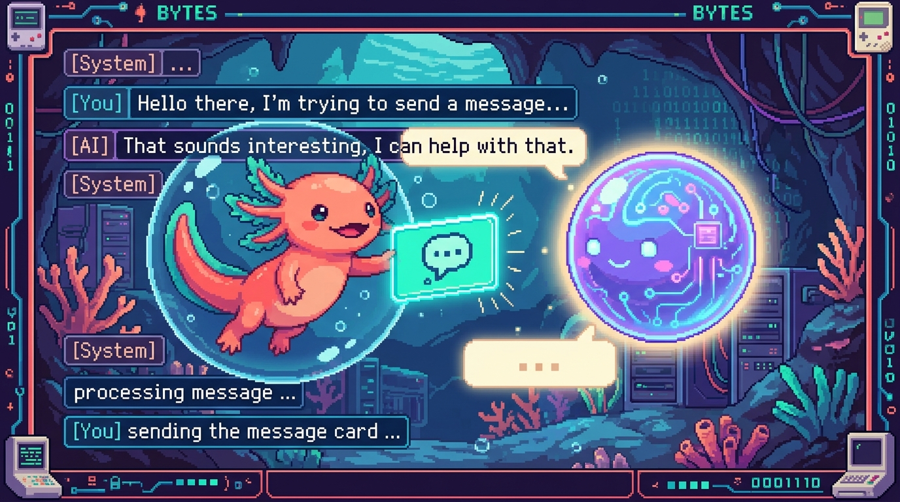

Capitulo 11 — Integrar IA a fondo

Hasta ahora usaste la IA como una caja cerrada: le mandas un texto y te devuelve otro, y poco mas. En este capitulo la destapamos. Vas a ver que es de verdad una API de modelo de lenguaje, como se conversa con ella a base de "mensajes", que son esos tokens de los que todo el mundo habla (la unidad con la que se mide y se cobra todo), y como ajustar el resultado con un par de parametros. Y no lo veremos en abstracto, sino con dos casos reales: el chat de tunal-digital, que habla con la API de Claude/Anthropic, y Faro, que usa la API de OpenAI para describir tus proyectos. Bit, el ajolote, nos acompana. Bit es curioso pero olvidadizo, y por eso entiende tan bien a los modelos de IA: ellos tambien olvidan todo entre una pregunta y la siguiente.
1. Que es una API de modelo de lenguaje
En el modulo 03 conociste fetch y aprendiste que una API es una especie de "ventanilla":
le mandas una peticion y te devuelve una respuesta. Una API de IA funciona igual. Lo que
cambia es lo que hay al otro lado: en vez de una base de datos cualquiera, hay un modelo de
lenguaje.
🟦 ¿Que significa? — Modelo de lenguaje (LLM)
Un modelo de lenguaje grande (en ingles Large Language Model, LLM) es un programa entrenado con cantidades enormes de texto que aprendio una sola cosa: predecir la siguiente palabra. Con eso solo ya puede redactar, resumir, traducir, clasificar, responder preguntas o programar. Donde se usa en un repo real: en tunal-digital, el chat de la web le manda al modelo Claude (de Anthropic) la pregunta del visitante y muestra la respuesta. En Faro, el modelo de OpenAI lee la informacion de tus proyectos y genera la descripcion y el roadmap.
La idea de fondo es importante: el modelo no busca la respuesta en ningun lado, la genera palabra por palabra. De ahi salen dos consecuencias que conviene tener presentes. Una, que a veces se inventa cosas con toda naturalidad (a eso se le llama "alucinar"). Y dos, que dos preguntas identicas pueden devolverte respuestas algo distintas.
🟦 ¿Que significa? — API
Una API (Application Programming Interface) es una direccion de internet a la que tu programa le hace una peticion HTTP y de la que recibe una respuesta, normalmente en formato JSON. Sirve para usar un servicio que vive en otro servidor sin tener ese servicio instalado en tu maquina. Donde se usa: la API de Claude vive en
https://api.anthropic.com/v1/messagesy la de OpenAI enhttps://api.openai.com/v1/.... Tu codigo manda sus peticiones a esas direcciones.💡 Tip
Un LLM es "sin estado" (en ingles stateless): no recuerda nada de la conversacion anterior. Cada vez que le preguntas algo, hay que volver a mandarle toda la conversacion. Bit lo resume a su manera: el modelo tiene memoria de pez. Si quieres que se acuerde de tu nombre, se lo tienes que repetir en cada mensaje.
2. El rol de los mensajes: system, user y assistant
Las APIs modernas de chat no esperan "un texto suelto". Esperan una lista de mensajes, y cada mensaje lleva un rol que le indica al modelo quien esta hablando.
🟦 ¿Que significa? — Mensaje y rol
Un mensaje es un objeto con dos partes: un rol (quien habla) y un contenido (lo que dice). El rol puede ser
system,useroassistant. Sirve para darle estructura a la conversacion, de modo que el modelo sepa quien dijo que. Donde se usa: tanto la API de Claude (tunal-digital) como la de OpenAI (Faro) reciben esta lista de mensajes en el cuerpo (body) de la peticion.
Los tres roles, dichos en cristiano:
system— las instrucciones generales. Es el guion del actor: define el tono, el idioma, las reglas del juego. El usuario normalmente no lo ve. Ejemplo: "Eres el asistente de Tunal Digital. Responde en espanol, breve y amable."user— lo que escribe la persona. Ejemplo: "Hola, ¿hacen paginas web?"assistant— lo que respondio el modelo en turnos anteriores. Esta ahi para que el modelo recuerde por donde iba la conversacion.
Una conversacion en JSON tiene esta pinta (este es el estilo de OpenAI, el que usa Faro):
{
"model": "gpt-4o-mini",
"messages": [
{ "role": "system", "content": "Eres el asistente de Faro. Responde en espanol." },
{ "role": "user", "content": "Resume el estado de mi proyecto RachaSimple." },
{ "role": "assistant", "content": "RachaSimple va por la fase de login con Supabase." },
{ "role": "user", "content": "¿Y que falta para terminarlo?" }
]
}
Fijate en que el ultimo mensaje es del user: el modelo respondera a ese, pero apoyandose en
todo lo anterior como contexto. En la API de Claude/Anthropic (la de tunal-digital) la cosa
es casi igual, con un solo matiz: las instrucciones de sistema no van dentro de messages, sino
en un campo aparte llamado system. El cuerpo queda asi:
{
"model": "claude-opus-4-8",
"max_tokens": 1024,
"system": "Eres el asistente de Tunal Digital. Responde en espanol, breve y amable.",
"messages": [
{ "role": "user", "content": "Hola, ¿hacen paginas web?" }
]
}
🔎 En tu codigo
En tunal-digital el frontend (HTML/CSS/JS vanilla) no llama directo a Anthropic. Le pasa el mensaje a un Cloudflare Worker, y es el Worker quien arma este JSON con
systemymessagesy se lo manda a la API de Claude. En la seccion 7 veremos por que ese paso intermedio no es opcional: es una cuestion de seguridad.⚠️ Cuidado
El campo
systemes poderoso, pero no hace milagros. Si le dices "responde solo en espanol" y el usuario insiste una y otra vez en otro idioma, el modelo puede acabar desviandose. Las instrucciones de sistema guian, no encadenan. Pon ahi tus reglas mas importantes, pero no esperes obediencia ciega.
3. Tokens: la moneda de los modelos
Aqui llega el concepto que mas suele confundir a quien empieza, asi que vamos despacio y por partes.
🟦 ¿Que significa? — Token
Un token es un pedacito de texto: puede ser una palabra corta, un trozo de una palabra larga, un signo de puntuacion o un espacio. El modelo no lee letras ni palabras enteras: lee tokens. Sirve para medir cuanto texto entra y sale, y tambien para cobrar, porque todo se cuenta en tokens. Donde se usa: tanto Claude (tunal-digital) como OpenAI (Faro) te dicen en su respuesta cuantos tokens consumio cada peticion.
Una regla aproximada para el espanol y el ingles: 1 token ≈ 4 caracteres, o, dicho de otra forma, unas 3 palabras = 4 tokens. No es exacto, pero sirve para hacerte una idea. Por ejemplo, la frase "Hola, ¿como estas?" anda por los 6 o 7 tokens.
💡 Tip
No cuentes tokens "a ojo" multiplicando por un numero fijo y a confiar. El codigo y los idiomas con tildes o emojis gastan mas tokens de lo que aparentan. Si necesitas el numero exacto, ambas APIs te dejan contarlos antes de enviar. Pero para una estimacion rapida de cabeza, con "4 caracteres por token" vas sobrado.
Hay dos tipos de tokens que conviene distinguir:
- Tokens de entrada (input): todo lo que le mandas (el
systemmas todos losmessages). - Tokens de salida (output): todo lo que el modelo te responde.
Esa distincion es la base del costo, y a el llegamos en la seccion 6.
🟦 ¿Que significa? — Ventana de contexto
La ventana de contexto es el maximo de tokens que el modelo puede "ver" de una sola vez, contando entrada y salida juntas. Piensa en el tamano de su escritorio: solo le caben ciertos papeles abiertos al mismo tiempo. Sirve para saber cuanto texto le puedes pasar antes de que se "desborde". Donde se usa: en Faro, cuando la IA lee muchos proyectos de GitHub y Drive de una tacada, hay que cuidar no pasarse de la ventana de contexto, porque entonces la peticion falla o se recorta.
⚠️ Cuidado
Si tu conversacion va creciendo y creciendo (como pasa en un chat largo), cada pregunta nueva arrastra todo el historial, y los tokens de entrada se disparan. Llega un momento en que te pasas de la ventana de contexto. Las salidas habituales: resumir lo viejo o quedarte solo con los ultimos mensajes. Bit lo dice asi: el escritorio no es infinito, y de vez en cuando toca guardar los papeles viejos en un cajon.
4. Parametros para controlar la respuesta
Ademas de model y messages, en el cuerpo de la peticion puedes incluir parametros que
ajustan como responde el modelo. Los dos que mas vas a usar al principio son max_tokens y
temperature.
🟦 ¿Que significa? — max_tokens
max_tokenses el maximo de tokens de salida que permites en la respuesta. Es un techo: si el modelo lo alcanza, corta ahi mismo, aunque no haya terminado la idea. Sirve para evitar respuestas eternas y poner un limite al gasto. Donde se usa: en la API de Claude (tunal-digital)max_tokenses obligatorio; en la de OpenAI es opcional (aparece comomax_tokensomax_completion_tokens, segun la version).
{
"model": "claude-opus-4-8",
"max_tokens": 500,
"messages": [{ "role": "user", "content": "Explicame que es una cookie." }]
}
⚠️ Cuidado
Si pones
max_tokensdemasiado bajo, la respuesta se corta a media frase. No es un fallo del modelo: literalmente le dijiste "no escribas mas de tantos tokens". Asi que, si ves respuestas truncadas, subemax_tokens. Para un chat normal, con unos cientos te apanas; para generar un roadmap entero como hace Faro, vas a necesitar bastante mas margen.🟦 ¿Que significa? — temperature
temperaturees un numero (normalmente entre 0 y 1) que controla cuanto se arriesga el modelo al elegir la siguiente palabra. Cerca de 0 es predecible y "formal"; mas alto, mas creativo y variado. Sirve para afinar segun la tarea: para cosas exactas (clasificar, extraer datos) conviene bajo; para redactar o lanzar ideas, mas alto. Donde se usa: en Faro, para generar el estado y el progreso de un proyecto interesa una temperatura baja, porque lo que quieres son respuestas consistentes y nada inventadas.💡 Tip
Un detalle que conviene saber en 2026: los modelos mas nuevos de Claude (la familia Opus 4.x y Fable 5) ya no aceptan el parametro
temperature; lo gobiernan con otros mecanismos por dentro. Los modelos de OpenAI que usa Faro, en cambio, si lo aceptan. La leccion es clara: cada API tiene sus propios parametros y van cambiando con el tiempo. Cuando algo no funcione, ve a la documentacion del modelo concreto que estas usando en lugar de copiar parametros de memoria.
Otro parametro con el que te vas a topar a menudo es stream, que activa el envio por partes. Lo
vemos en la seccion 5.
5. Streaming: respuestas que van llegando de a poco
¿Te has fijado en que ChatGPT y otros chats escriben la respuesta letra a letra, como si la estuvieran tecleando en ese momento? Eso es streaming.
🟦 ¿Que significa? — Streaming
El streaming consiste en recibir la respuesta del modelo en pedacitos, segun se va generando, en lugar de esperar a que este completa y recibirla de golpe. Sirve para que el usuario vea texto enseguida (mejor experiencia) y para evitar que la conexion se caiga por tanto esperar en respuestas largas. Donde se usa: un chat como el de tunal-digital se siente mucho mas agil si el Worker reenvia el texto de Claude conforme llega, en vez de mostrar todo al final.
A grandes rasgos, va asi. En la peticion pones "stream": true. El servidor, en lugar de
mandarte un solo JSON al final, te envia una secuencia de pequenos eventos. Cada evento trae un
trocito de texto (lo que se llama un "delta"). Tu codigo los va pegando uno tras otro hasta
formar la respuesta completa.
{
"model": "claude-opus-4-8",
"max_tokens": 1024,
"stream": true,
"messages": [{ "role": "user", "content": "Escribe un haiku sobre el codigo." }]
}
💡 Tip
El streaming es comodo para el usuario, pero anade trabajo: tu codigo tiene que ir juntando los pedazos en vez de recibir un objeto ya listo. Para tu primer chat, arrancar sin streaming (esperar la respuesta completa) es perfectamente valido y mucho mas facil de depurar. Bit lo recomienda asi: primero que funcione de un solo golpe, y luego ya lo pones "bonito" con stream.
6. El costo: pagas por tokens
Las APIs de IA cobran por token, casi siempre con un precio por cada millon de tokens (se abrevia MTok). Y como regla general, la salida cuesta mas que la entrada, porque generar texto sale mas caro que leerlo.
🟦 ¿Que significa? — Costo por tokens
Es la forma de cobrar de estas APIs: un precio por cada millon de tokens de entrada y otro, mas alto, por cada millon de tokens de salida. Pagas exactamente lo que consumes. Sirve para poder estimar y mantener a raya cuanto te va a costar usar la IA en tu producto. Donde se usa: tanto en la cuenta de Anthropic (tunal-digital) como en la de OpenAI (Faro), el panel te muestra el gasto acumulado en tokens.
Veamoslo con un ejemplo, usando precios de referencia de la familia Opus de Claude (5 USD por millon de tokens de entrada y 25 USD por millon de salida):
- Una peticion con 1.000 tokens de entrada cuesta
1.000 / 1.000.000 * 5 = 0,005 USD. - Si responde con 500 tokens de salida, son
500 / 1.000.000 * 25 = 0,0125 USD. - Total de esa peticion: unos 0,0175 USD, menos de dos centavos.
Suena a calderilla, y para una sola peticion lo es. Pero multiplicalo por miles de visitantes en el chat de tunal-digital, o por un Faro que analiza decenas de proyectos cada vez, y de repente es un numero que si importa.
💡 Tip
Tres palancas para gastar menos: (1) usar un modelo mas barato para tareas simples (cada familia trae modelos "grandes" caros y "pequenos" baratos); (2) ajustar
max_tokenspara no generar texto de mas; y (3) no arrastrar historial innecesario en los chats largos. En Faro, la filosofia de "refresco bajo demanda" (el usuario dispara el analisis, no se ejecuta solo) tambien es, en el fondo, una decision de costo: no llamas a la IA cuando no hace falta.⚠️ Cuidado
Cada vez que reenvias toda la conversacion (porque el modelo no recuerda nada, ¿te acuerdas?), vuelves a pagar esos tokens de entrada. Un chat largo no solo come mas memoria: cuesta mas dinero en cada turno. Tenlo presente antes de mandar 50 mensajes de historial en cada pregunta.
7. Seguridad: las claves van en el servidor, NUNCA en el cliente
Esta es la seccion mas importante del capitulo. Leela dos veces. Es la regla de seguridad explicita de Faro y vale para cualquier proyecto que use IA.
🟦 ¿Que significa? — API key (clave de API)
Una API key es una contrasena secreta que te identifica ante la API. Quien la tenga puede hacer peticiones a tu cuenta y con tu dinero. Sirve para autenticarte ante Anthropic u OpenAI, de modo que sepan que eres tu y te cobren a ti. Donde se usa: tanto Claude (tunal-digital) como OpenAI (Faro) exigen una clave en cada peticion, dentro de una cabecera HTTP (
x-api-keyen Anthropic,Authorization: Bearer ...en OpenAI).🟦 ¿Que significa? — Cliente vs. servidor
El cliente es lo que corre en el navegador del usuario: tu HTML, tu CSS y tu JavaScript. El usuario puede ver todo ese codigo (clic derecho → inspeccionar). El servidor es codigo que corre en una maquina que tu controlas y que el usuario no puede leer. Sirve para decidir donde guardar los secretos: lo del cliente es publico, lo del servidor es privado. Donde se usa: en tunal-digital, el navegador es el cliente y el Cloudflare Worker es el servidor. En Faro (Next.js), el cliente es el navegador y las rutas de servidor de Next.js (junto con
user_connectionsprotegido por RLS en Supabase) son el lado seguro.
La regla, en una sola frase: si pones tu API key en el JavaScript del navegador, cualquiera puede robarla. Da igual que la "escondas" en una variable o la ofusques; el navegador la descarga y se puede leer. Alguien la copia, dispara miles de peticiones, y la factura te llega a ti.
Por eso tunal-digital mete un Cloudflare Worker en medio. El flujo es este:
Navegador (cliente) -> Cloudflare Worker (servidor) -> API de Claude
(sin la clave) (aqui SI esta la clave) (Anthropic)
El navegador solo le pasa al Worker el mensaje del usuario. El Worker, que vive en un servidor seguro, tiene la clave guardada como variable de entorno y es quien habla con Anthropic. La clave no toca el navegador en ningun momento. Faro hace exactamente lo mismo con sus rutas de servidor y la clave de OpenAI.
🟦 ¿Que significa? — Variable de entorno
Una variable de entorno es un valor secreto (como una API key) que se configura en el servidor fuera del codigo, y que el programa lee al arrancar. No se escribe en los archivos del proyecto, asi que nunca termina en GitHub. Sirve para guardar secretos sin meterlos en el codigo ni subirlos al repositorio. Donde se usa: en el Worker de tunal-digital y en Faro, las claves viven en variables de entorno del servidor, nunca en el codigo que se sube al repo.
⚠️ Cuidado
Nunca escribas una API key directamente en un archivo
.js,.tso.html, y nunca hagas commit de un archivo con la clave dentro. Si por accidente subes una clave a GitHub, dala por quemada: revocala de inmediato desde el panel de Anthropic u OpenAI y crea una nueva. Hay bots que rastrean GitHub buscando claves filtradas, y las encuentran en segundos.🔎 En tu codigo
En Faro, la regla esta escrita negro sobre blanco en el
CLAUDE.mddel proyecto: "Tokens y secretos solo en el servidor. Nunca exponer claves en el cliente ni commitearlas." Las conexiones OAuth con GitHub y Google Drive se guardan en la tablauser_connectionscon RLS (seguridad a nivel de fila) en Supabase, de manera que cada usuario solo ve lo suyo. Y la IA de OpenAI se llama desde el lado servidor, nunca desde el navegador.💡 Tip
¿Como sabes si una clave esta "en el cliente"? Hazte una pregunta sencilla: ¿el navegador del usuario necesita esa clave para hacer su trabajo? Si la respuesta es "tendria que descargarla", entonces esta en el cliente y esta mal. La clave solo debe vivir donde el usuario no puede mirar.
8. Juntando todo: el viaje de una pregunta en tunal-digital
Pongamos las piezas en orden, paso a paso, siguiendo el chat de tunal-digital:
- El visitante escribe "¿Hacen tiendas online?" en el chat de la web.
- El JavaScript del navegador (cliente) le manda solo ese texto al Cloudflare Worker.
- El Worker arma el cuerpo de la peticion: el campo
systemcon las instrucciones de marca, el historial enmessages, elmodelymax_tokens. - El Worker le anade la API key (que tiene en una variable de entorno) y llama a la API
de Claude en
https://api.anthropic.com/v1/messages. - Claude procesa los tokens de entrada, genera la respuesta (los tokens de salida) y se la devuelve al Worker, normalmente por streaming.
- El Worker reenvia el texto al navegador, que lo muestra al visitante.
- La respuesta incluye cuantos tokens se usaron: con ese dato podrias estimar el costo.
Cada pieza de este capitulo asoma en ese viaje: los mensajes con sus roles, los tokens, la ventana de contexto (si el chat se alarga), los parametros, el streaming, el costo y, sobre todo, la clave a salvo en el servidor. Bit asiente satisfecho: la caja ya no es magica, ahora se entiende.
✅ Checklist — ¿ya domino esto?
- [ ] Puedo explicar con mis palabras que es un LLM y por que "genera" en vez de "buscar".
- [ ] Se la diferencia entre los roles
system,useryassistant. - [ ] Entiendo por que un LLM no recuerda nada entre peticiones (es stateless).
- [ ] Se que es un token y puedo estimar a ojo cuantos tiene una frase corta.
- [ ] Entiendo que es la ventana de contexto y por que un chat largo se la puede comer.
- [ ] Se para que sirven
max_tokensytemperaturey cuando bajar la temperatura. - [ ] Puedo explicar a grandes rasgos que es el streaming y que problema resuelve.
- [ ] Se que la salida cuesta mas que la entrada y como estimar el costo de una peticion.
- [ ] Tengo clarisimo que la API key va en el servidor y JAMAS en el cliente ni en un commit.
- [ ] Entiendo por que tunal-digital usa un Cloudflare Worker entre el navegador y Claude.
🧪 Ejercicios
-
Roles a mano. Escribe en papel (o en un comentario de codigo) una conversacion de 4 mensajes para el asistente de Tunal Digital: un
systemque defina el tono, dosusery unassistanten medio. Marca claramente el rol de cada uno. -
Estimando tokens. Toma la frase "Faro lee GitHub y Google Drive para describir tus proyectos con IA." y estima cuantos tokens tiene usando la regla de 4 caracteres por token. Luego escribe en una frase por que esa estimacion no es exacta.
-
💻 Contando el gasto. Escribe una pequena funcion en JavaScript
costo(entrada, salida)que reciba el numero de tokens de entrada y de salida y devuelva el costo en dolares, usando 5 USD/MTok de entrada y 25 USD/MTok de salida. Pruebala con 2.000 de entrada y 800 de salida. -
💻 Detector de claves filtradas. Imagina este fragmento de cliente:
const apiKey = "sk-ant-xxxx"; fetch("https://api.anthropic.com/v1/messages", ...). Explica en un comentario por que esto es inseguro y reescribe el plan: ¿a quien deberia llamar el navegador en su lugar (en el caso de tunal-digital)? -
Comparando dos APIs. Haz una mini tabla con dos columnas (Claude/Anthropic y OpenAI/Faro) y compara: (a) donde van las instrucciones de sistema, (b) si
max_tokenses obligatorio, (c) si aceptantemperatureen sus modelos mas nuevos. Apoyate en lo leido en este capitulo. -
💻 Chat sin streaming. Esboza (en pseudocodigo o JS) el cuerpo JSON de una peticion al chat:
model,max_tokens,systemy un arreglomessagescon un mensaje deuser. No pongas la API key en ese objeto y explica en un comentario donde deberia estar.